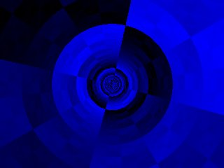
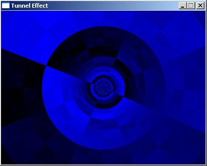
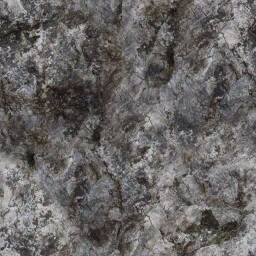
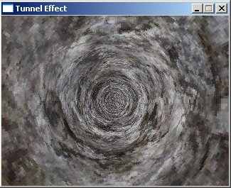
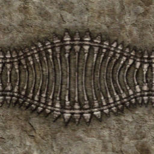
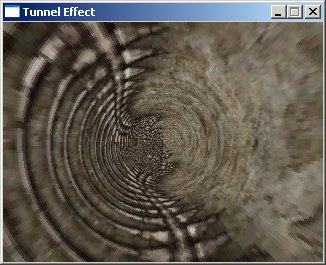
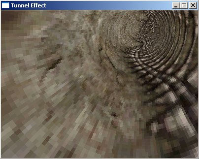

#define texWidth 256
#define texHeight 256
#define screenWidth 640
#define screenHeight 480
// Y-coordinate first because we use horizontal scanlines
Uint32 texture[texHeight][texWidth];
int distanceTable[screenHeight][screenWidth];
int angleTable[screenHeight][screenWidth];
Uint32 buffer[screenHeight][screenWidth];
|
int main(int argc, char *argv[])
{
screen(screenWidth, screenHeight, 0, "Tunnel Effect");
//generate texture
for(int y = 0; y < texHeight; y++)
for(int x = 0; x < texWidth; x++)
{
texture[y][x] = (x * 256 / texWidth) ^ (y * 256 / texHeight);
}
|
//generate non-linear transformation table
for(int y = 0; y < h; y++)
for(int x = 0; x < w; x++)
{
int angle, distance;
float ratio = 32.0;
distance = int(ratio * texHeight / sqrt((x - w / 2.0) * (x - w / 2.0) + (y - h / 2.0) * (y - h / 2.0))) % texHeight;
angle = (unsigned int)(0.5 * texWidth * atan2(y - h / 2.0, x - w / 2.0) / 3.1416);
distanceTable[y][x] = distance;
angleTable[y][x] = angle;
}
|
float animation;
//begin the loop
while(!done())
{
animation = getTime();
//calculate the shift values out of the animation value
int shiftX = int(texWidth * 1.0 * animation);
int shiftY = int(texHeight * 0.25 * animation);
for(int y = 0; y < h; y++)
for(int x = 0; x < w; x++)
{
//get the texel from the texture by using the tables, shifted with the animation values
int color = texture[(unsigned int)(distanceTable[y][x] + shiftX) % texWidth][(unsigned int)(angleTable[y][x] + shiftY) % texHeight];
buffer[y][x] = color;
}
drawBuffer(buffer[0]);
redraw();
}
return(0);
}
|

loadBMP("textures/tunnel.bmp", texture[0], texWidth, texHeight);
|




#define texWidth 256
#define texHeight 256
#define screenWidth 400
#define screenHeight 300
int texture[texWidth][texHeight];
//Make the tables twice as big as the screen. The center of the buffers is now the position (w,h).
int distanceTable[2 * screenWidth][2 * screenHeight];
int angleTable[2 * screenWidth][2 * screenHeight];
int buffer[screenWidth][screenHeight];
int main(int argc, char *argv[])
{
screen(screenWidth, screenHeight, 0, "Tunnel Effect");
loadBMP("textures/tunnel.bmp", texture[0], texWidth, texHeight);
//generate non-linear transformation table, now for the bigger buffers (twice as big)
for(int y = 0; y < h * 2; y++)
for(int x = 0; x < w * 2; x++)
{
int angle, distance;
float ratio = 32.0;
//these formulas are changed to work with the new center of the tables
distance = int(ratio * texHeight / sqrt(float((x - w) * (x - w) + (y - h) * (y - h)))) % texHeight;
angle = (unsigned int)(0.5 * texWidth * atan2(float(y - h), float(x - w)) / 3.1416);
distanceTable[y][x] = distance;
angleTable[y][x] = angle;
}
float animation;
//begin the loop
while(!done())
{
animation = getTime() / 1000.0;
//calculate the shift values out of the animation value
int shiftX = int(texWidth * 1.0 * animation);
int shiftY = int(texHeight * 0.25 * animation);
//calculate the look values out of the animation value
//by using sine functions, it'll alternate between looking left/right and up/down
//make sure that x + shiftLookX never goes outside the dimensions of the table, same for y
int shiftLookX = w / 2 + int(w / 2 * sin(animation));
int shiftLookY = h / 2 + int(h / 2 * sin(animation * 2.0));
for(int y = 0; y < h; y++)
for(int x = 0; x < w; x++)
{
//get the texel from the texture by using the tables, shifted with the animation variable
//now, x and y are shifted as well with the "look" animation values
int color = texture[(unsigned int)(distanceTable[x + shiftLookX][y + shiftLookY] + shiftX) % texWidth]
[(unsigned int)(angleTable[x + shiftLookX][y + shiftLookY]+ shiftY) % texHeight];
buffer[y][x] = color;
}
drawBuffer(buffer[0]);
redraw();
}
return(0);
}
|
